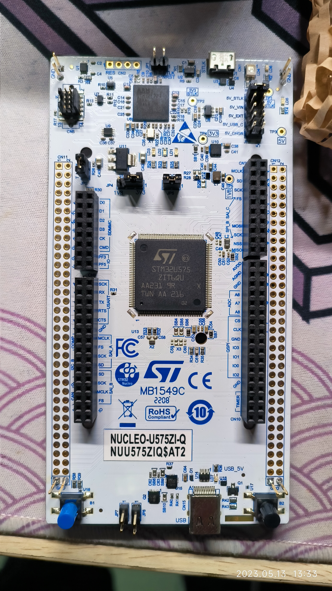

前言
STM32 的开发环境之所以相当难配置，是因为从代码编写到编译到烧录调试，可选的工具琳琅满目，用法各异。 这导致咱们电类专业学生上手 STM32 之初，发现每一个视频、每一篇博客都在介绍不同的路线，让人不知所措。 更糟的是，新人在并不了解工具链、编译器、烧录仿真等等概念的情况下，无法在熟悉开发环境使用之前了解这些开发环境孰优孰劣。
比如我这种希望电脑上的 IDE 越少越好的人来说，就非常不愿意安装一个 GUI 看上去十分落后的 Keil。 之前还尝试过 STM32CubeIDE，但是它的代码提示和自动补全很难搞，运行也很吃内存。 结果我很长一段时间虽然手上有 STM32 开发板，但始终不想去动它。
最近因为要准备竞赛，我又不得不开始啃 STM32 这个硬骨头。 经过几天的研究，我尝试了数套开发环境，最终找到了 VS Code + arm-none-eabi-gcc + OpenOCD 的组合。 这套环境有 4 大优势：
- 使用 VS Code C/C++ 的 IntelliSense 实现代码提示和补全，几乎不用担心函数、文件名下的红波浪线。
- 除了必须用 STM32CubeMX 生成代码外，不需要打开任何其他的窗口，即可完成工程的编译、烧录、调试。
- 跨平台，Windows 和 Linux 下都能使用。
- 全部免费，免去破解 Keil 的步骤，适合有许可证洁癖的宝宝。
本文并不单纯是配置这套环境的教程。 我想在这篇长文中详细讲解一下 STM32 的几种常见开发环境是什么、怎么用的，总结一下自己对 STM32 的软件生态的了解。
接下来请出本文的嘉宾：NUCLEO-U575ZI-Q。 这块 ST 官方的开发板搭载 STM32U575ZIT6Q 芯片（LQFP144 封装），同时板上自带 ST-LINK 调试器。 本文中出现的硬件实验都是基于这块开发板进行的。
STM32 开发环境的组成
我们按照给 STM32 单片机编写工程的完整流程，看看 STM32 的开发都用到了哪些东西。
我想通过罗列这些工具，对比一下 STM32 相比其他单片机的开发有什么区别。
代码生成工具
如果你之前使用过 Arduino 或者 ESP32，你会注意到给它们创建一个新工程并不困难。
创建一个 Arduino 工程，本质上只需要新建一个 .ino 文件。
如果要使用多文件，则可以把所有头文件和源文件放在 .ino 文件的同一个目录下，Arduino 会自动链接和编译所有的文件。
ESP32（如果基于 ESP-IDF 而不是 Arduino 开发）则是从 esp-idf 的 examples 中复制一个 sample-project 文件夹，然后编辑其中的 CMakeLists.txt 文件，再开始写代码。
ESP-IDF 的工程是基于 CMake 构建的，因此 sample-project 的文件结构如下：
|
|
如果要为其添加新的头文件和源文件，需要在 main/CMakeLists.txt 中作出对应的修改。
而 STM32 就远比以上二者复杂了。 STM32 的 MCU 型号众多，外设配置不尽相同，并且 STM32 的库文件相当地底层，仅仅关于配置 IO 的代码就相当复杂，靠手搓文件基本上是不可能的。
因此，抛开标准库不谈，基于 HAL 库的 STM32 开发甚至需要专门的工具 STM32CubeMX 来生成具有完整配置的工程。
文本编辑器
文本编辑器没有什么多说的，还是那句话，文本编辑器的本质工作就是编辑文本，用记事本，用 Vim，理论上也不是不行。 IDE 只是在文本编辑的基础上融合了其他的功能。
针对 STM32，最常用的 IDE 就是 Keil 了，当前几乎每一个 STM32 入门教程的前几章中必定提到 Keil 的下载和使用。
ST 也在 2019 年推出了基于 Eclipse 的 STM32CubeIDE， 将 STM32 的代码生成工具和 IDE 集成在一起，可以说是目前集成度最高的 STM32 开发环境。
编译器
用来编译 STM32 工程的编译器有很多，比如 Keil 内置的编译器 ARMCC、 IAR 的编译器 IAR Embedded Workbench、 GNU 的编译器 arm-none-eabi-gcc 等等。
这里面 ARMCC 既集成在 Keil MDK 中，也可以独立使用； IAR 仅随其 IDE 一起发行； GCC for ARM 则是开源的，独立发行。
那么第一个问题来了，我怎么知道我的工程该用谁家的编译器编译呢？
关于这一点，STM32CubeMX 会帮你解决。

上图的 Project Manager 界面中，有一个选项叫做 “Toolchain / IDE”，由用户来选择自己的工程之后由哪个工具链来编译。 可以看到，CubeMX 提供了 5 个选项：
- EWARM：使用 IAR Embedded Workbench
- MDK-ARM：使用 Keil MDK
- STM32CubeIDE：使用 CubeIDE
- Makefile：工程目录下会生成
Makefile文件，由用户使用 GNU Make 链接和编译 - CMake：工程目录下会生成
CMakeLists.txt文件，由用户使用 CMake 生成Makefile，再由 Make 编译
其中第 4 和第 5 个选项看上去并没有指定编译器，但是由 CubeMX 生成的 Makefile 中会有这么一段：
|
|
这里的 PREFIX = arm-none-eabi- 就是 GNU ARM 编译器的前缀。
也就是说，CubeMX 是默认我们使用 arm-none-eabi-gcc 来编译工程的。
如果我们采用 GNU ARM Toolchain，那么我们就应该在 CubeMX 中选择 “Makefile” 或者 “CMake” 作为工程的生成方式。
烧录 / 调试工具
STM32 代码的烧录和调试又是一个大坑。
CubeMX 通过可视化的方式让用户配置 MCU 上的外设、时钟等。

在 “Project Manager” 界面，还有若干个选项可以配置工程的生成方式。